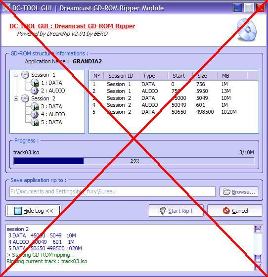

| 13. GD-ROM Ripper |
Le GD-ROM ripper était prévu à l'origine pour vous permettre de faire des copies de sauvegarde de vos GD-ROM originaux.
Suite à des problèmes que j'ai eu sur ma conscience et avec d'autres membres de la communauté, j'ai décidé de l'enlever.
J'ai voulu trop bien faire, et proposer un outil permettant d'avoir accès à tout ce qui est possible sur la Dreamcast. J'ai eu tort.
Veuillez ne pas me le re-demander, merci.
